ROLES
- This is a solo project where I assumed the following roles:
- Interaction Designer
- User Experience (UX) Designer
- User Interface (UI) Designer
DELIVERABLES
- Interaction Design:
- High-fidelity interactive mobile prototypes of 3 key interaction sequences
- UX & UI Design:
- High-fi mockups
- Style guide & UI components
- Low-fidelity wireframes
- Usability test findings
- Logo design and branding
SPECIFICATIONS
- Duration:
- 4 weeks
- Tools:
- Principle app
- Sketch app
- Axure RP
- Photoshop
Overview
Ingrain is a plant-based, meal-planning app that was conceived as a response to the diabetes epidemic that is presently ravaging North America. Its purpose is to equip those who often feel as though they’re at the mercy of a chronic disease like diabetes—to reverse their diagnosis with plant-based foods.
A case study in two parts
This is Part 2 of 2 in the Ingrain case study. This second part covers the User Interface and the Interaction Design portions of the project. I will walk you through the evolution of the interface design, and the process of leveraging motion design to optimize the user experience during onboarding, meal-planning, and meal-recording.
Curious as to how I got here?
See the strategic pivots that redefine the scope of the MVP and inform the content structure of the product page in Part 1: UX Strategy and Product Page Design
Part 2—Interface & Interaction Design
This is a story of putting usability ahead of expressivity. Examining UI interaction sequences at a granular level taught me to design for the in-between moments of an object's transition.
Here are playable video previews showing snippets from the final interaction sequences:
Onboarding


Meal-planning


Structure
The beginnings of a structure
My initial user flows gave me a starting point to begin to visualize the screen app interface.
Sketching visual representations of my initial user flows opened the possiblities of simplifying the user’s navigation path—from top level content to other content that are several levels deep, and back again.
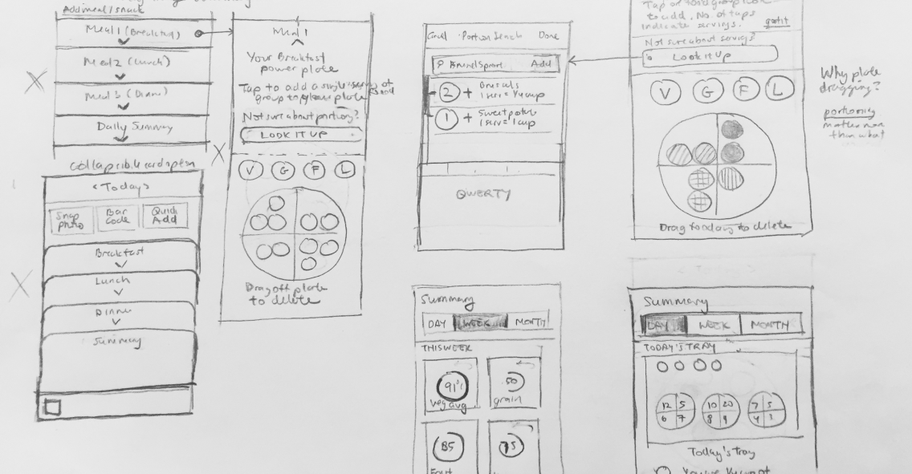App navigation and structure
A flat navigation system within the app architecture that facilitates quick referencing and quick task switching is the rationale behind incorporating a set of tab bars that display five frequently-accessed locations: home, tracker, saved, shopping list, and profile.
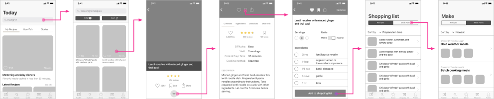From studying the app architecture of the Kitchen Stories app, I learned that the secret to a tight user flow in a primarily content-driven app is to control the entry point of user engagement by restricting it to the lowest level content, which are the individual recipe articles.
Creating an onboarding sequence
It was important to respect the user by being transparent about why Ingrain asks the questions it does to construct a dietary profile. This is achieved by displaying titles that identify the task at hand.

Showing how many steps are left, and giving users the option to skip parts of the onboarding process are just some of the ways to respect users.
Interface Design
Early iterations of the app interface
Since most food and cooking apps favor a light-UI scheme, I experimented with creating a dark UI scheme with a palette of earth-tones for the purposes of differentiating Ingrain’s branding in the meal-planning space.


Responding to User Feedback
“The onboarding process is hard to follow.”
I learned that brief prompts that direct the user to take action and then see the result of their action is a much more effective and funner way to educate the user about the app interface than blocks of instructional text.
“There’s a lot going on, I'm unsure of what to tap on to move forward.”
The presence of many controls in such a small screen made it confusing for users to find their way in the app. I clarified their path by eliminating controls that were unnecessary to the task at hand to decrease the need for decision-making.
“Most of the time I already have 80% of the ingredients, I would like to add only some ingredients to my shopping list.”
This is an instance where user feedback uncovers key insights about the posture of a feature. In response to the user’s goals, the shopping list feature changes its posture from a record of many mealplans to a custom check-off grocery list.
The verdict: usability was being undermined by expressivity
After testing the app interface with a predominatly dark color scheme, I concluded that much of the users’ confusion in navigating the app was due to a lack of graphic hierarchy.
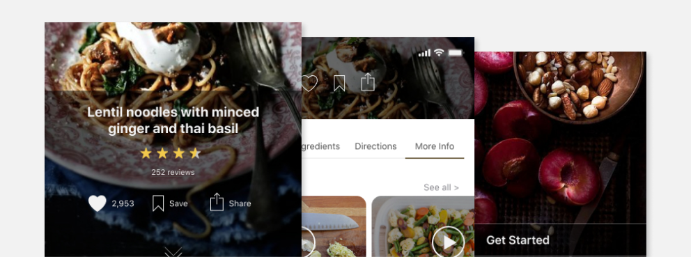By the end of user testing, it was clear that the expressivity of the style guide and color palette was undermining the usability of the app. Moreover, the dark colors make the food look less appetizing.
It was clear that a style guide redesign was needed for the sake of enhancing usability. This led me to abandon the dark and tonal grey color palette in favor of a light color scheme.
Redesigning the palette
Ingrain’s newly-redesigned style guide takes a decidedly light-UI direction. It comprises of mostly neutrals with two earth tones that serve as ingrain’s primary colors.
Style Guide
I learned that when working with muted colors, it is critical to create shade variations based on the desired contrast level that one wishes the foreground content to have against the background content. The primary color shades were inspired by the fruits plum and fig. The brights color group was added for accents and attention-calling elements.
Logo design process
Ingrain's logo depicts a mortar and pestle. As one of the oldest food-preparation instruments used in many cultures from around the globe, it is also used by apotecharies to crush medicinal herbs. This association wonderfully connects the idea of food with medicine—which is what Ingrain is about.
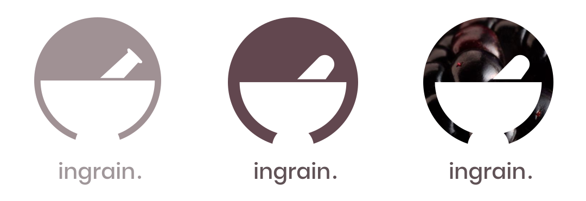Putting the app user interface together
The most challenging portion of developing the Ingrain app interface is integrating the gorgeous food photography with the vectorized content of the meal tracker.
To lessen the jarring juxtaposition of both types of content when they grace the same screen, I opted for a simplified outline shapes over the detailed vector food shapes whose cartoony realism competed with the realism already present in the food photography.
 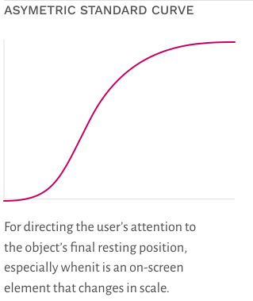
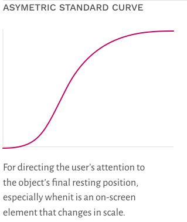


 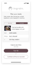
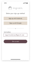
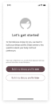
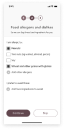
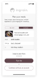
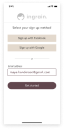
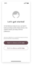
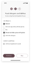
 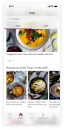
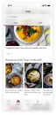


 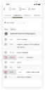
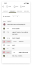
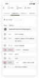
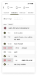